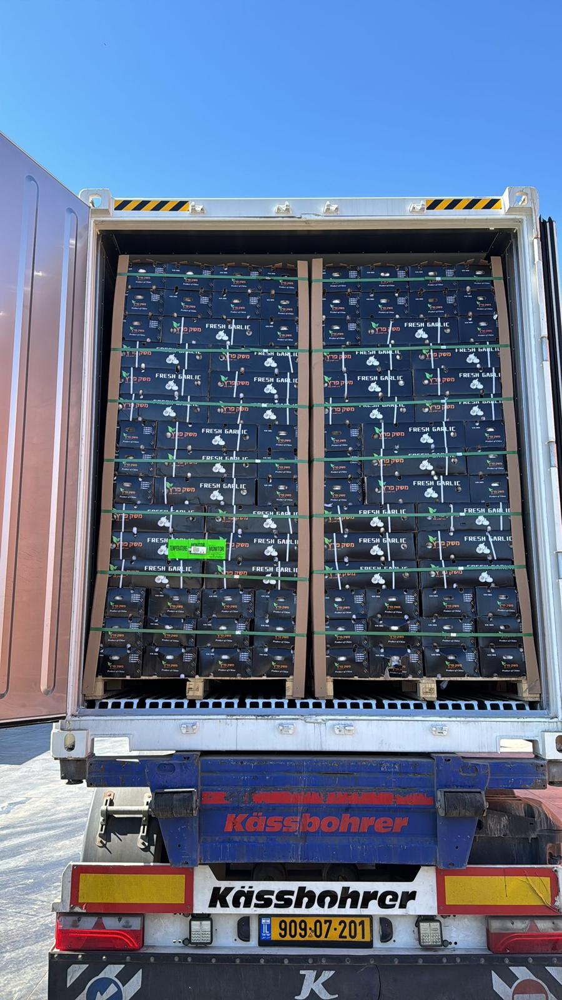
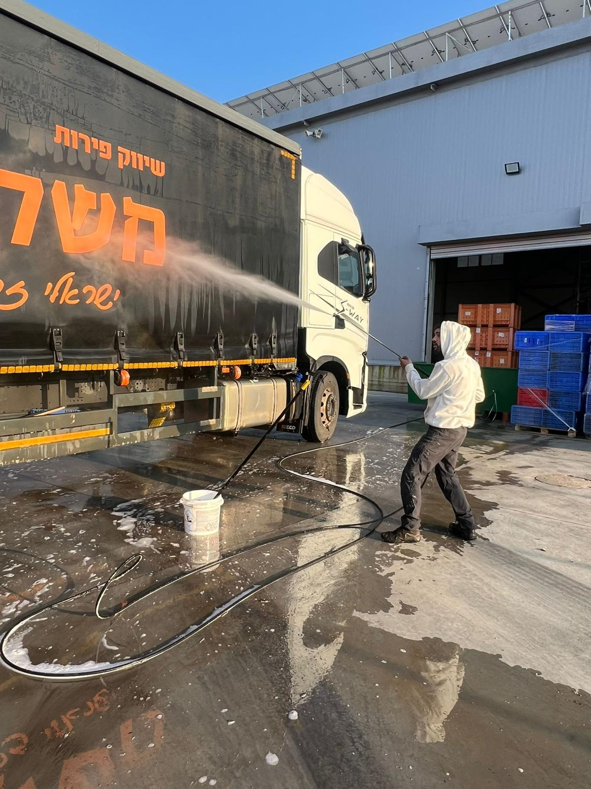
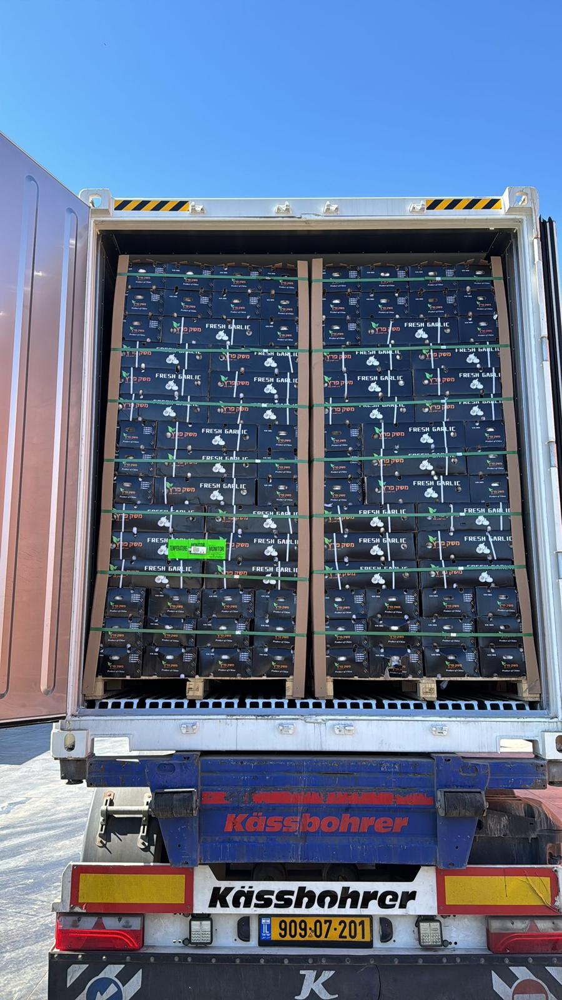
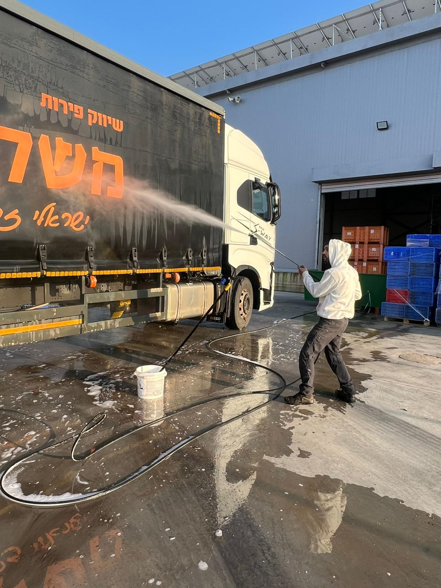
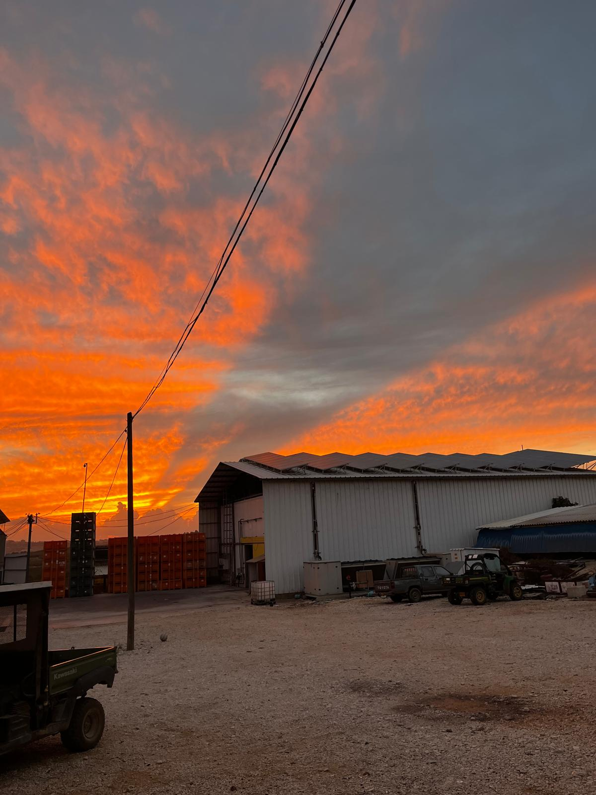
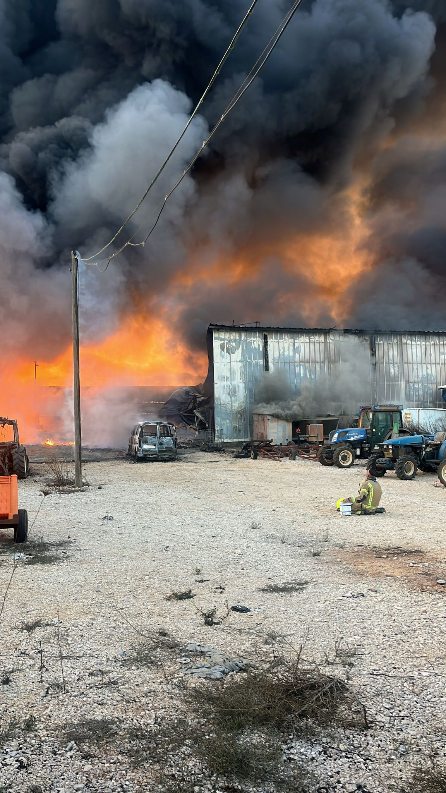
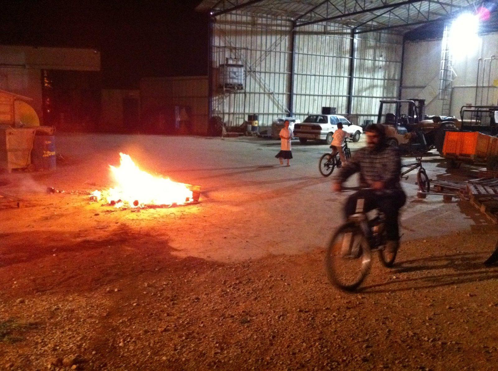
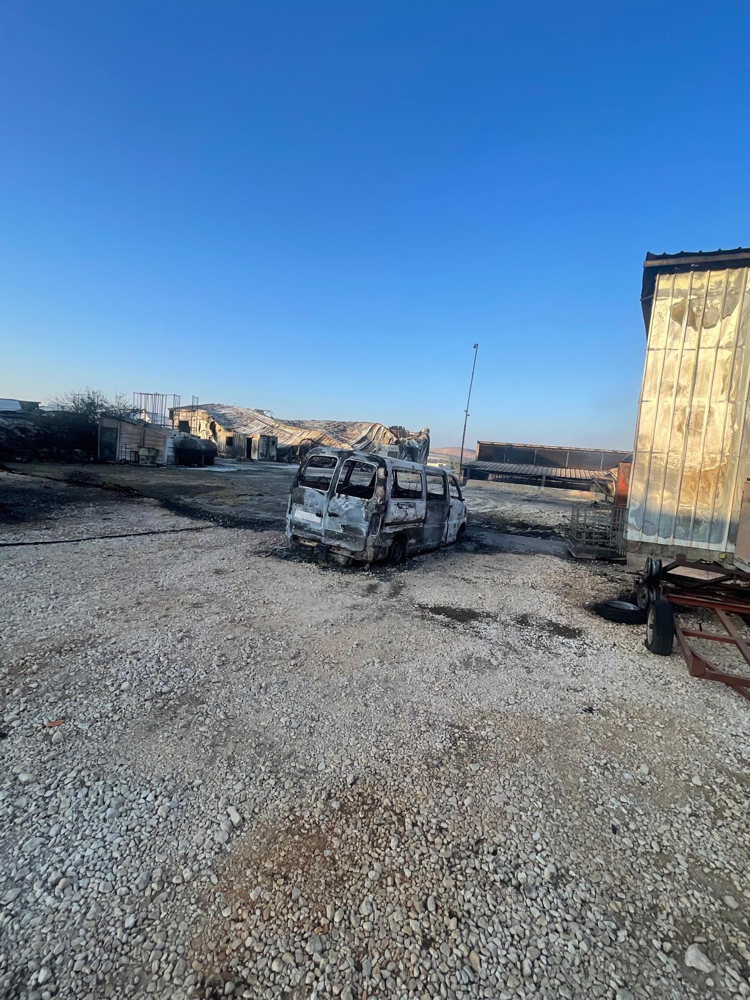
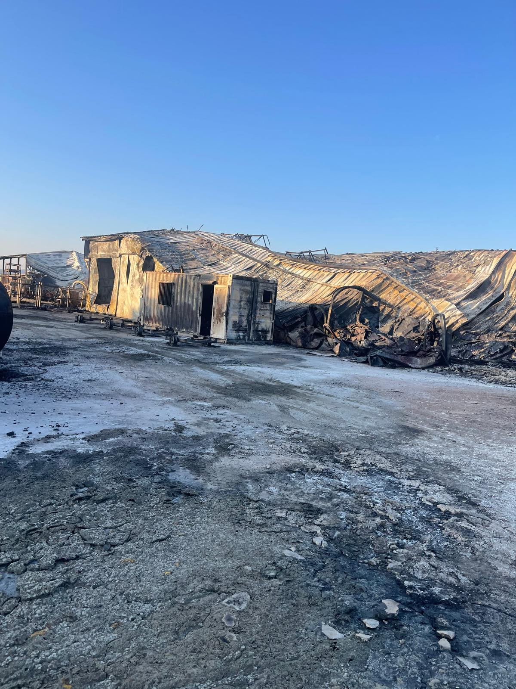

היסטוריה
משק פרץ נוסד על ידי שאול ומרים פרץ, שעלו לארץ ממרוקו בשנת 1963. עם עלייתם, הם התיישבו במושב אביבים, מושב חקלאי בגליל העליון, שבו כל התושבים עוסקים בחקלאות ובפרנסתם מהאדמה. במושב זה התחיל הסיפור המשפחתי של משק פרץ, המבוסס על אהבה לאדמה ולעבודה חקלאית.
התפתחות המשק לאורך השנים
מאז הקמתו, משק פרץ עבר שינויים רבים. בתחילת הדרך עסקנו בגידול מטעי פרי קטנים, עם הזמן הרחבנו את המשק והכנסנו שיטות גידול מודרניות וטכנולוגיות מתקדמות. בנוסף, הקמנו מערך מיון וקירור לפירות שלנו, ובשנים האחרונות אנו מספקים שירותי מיון ושיווק גם לחקלאים נוספים באזור, כדי לייצר מענה כולל ואיכותי לצרכים המגוונים של החקלאים והלקוחות.
המטעים
מערך המיון
במערך המיון אנו ממיינים את הפירות שלנו בצורה מקצועית, תוך שימוש בטכנולוגיה מתקדמת. המערך כולל גם חדרי קירור לשמירה על איכות הפירות עד לרגע השיווק.
שיווק והפצה
אנו משווקים את פירות המשק ברחבי הארץ, ובשנים האחרונות גם מספקים פתרונות שיווק והפצה לחקלאים נוספים באזור. כך אנו מייצרים מענה כולל לצרכי החקלאים והלקוחות.
 



השפעת המלחמה
בשנה האחרונה, בעקבות מלחמת "חרבות ברזל" , המושב פונה מתושבים, הגישה לשטחים חקלאים נאסרה והפכה למסכנת חיים . בחודש נובמבר האחרון עקב פגיעה ישירה נשרף כליל מערך המיון של המשק באביבים. מפעל חיים של 60 שנים ו-3 דורות.
סרטון מאירועי השריפה
לפני ואחרי השריפה
לפני
אחרי
לפני
אחרי
לפני
אחרי
ראיון עם מיכאל פרץ
מיכאל פרץ, הבן של שאול פרץ, התראיין לתוכנית הרדיו של חיים הכט וסיפר על השריפה שהתרחשה במשק.
בראיון הוא מתאר את הרגעים הקשים, את הנזקים הכבדים שנגרמו למשק, ואת הדרך שבה המשפחה מתמודדת
.
"ברגעים האלו הרגשה שכל עולמי והעולם של דור ההמשך ודור המייסדים חרב בכמה שעות של אש תופת.
הרגשתי חורבן, הרגשתי פלאש-בק של כל 50 השנים שהקמנו את העסק הזה מאפס,
הקמנו בית אריזה למופת ששירת את המשק שלנו ואת החקלאים ועזר להם להתפרנס.
לקחנו הלוואות ומה לא עשינו כדי שהדור הבא שלנו ימשיך לגור באביבים ולעבד את האדמות מול החיזבאללה.
אימא שלי עד היום לא יודעת שזה קרה שכל 60 השנה נשרפו"
.
"אימא אישה מבוגרת שפונתה לבית מלון,
היא לא הסתדרה שם במצב שנוצר והיא בשבר גדול ואנחנו לא מסוגלים לספר לה שפעל החיים עלה באש.
לפני שנה היא עבדה בבית האריזה ועכשיו היא נזקקת לזריקות של ויטמינים כדי לאזן אותה, היא איבדה את החשק לחיות,
בקושי זזה איבדה את הזיכרון. הא הייתה חקלאית שעבדה 24 שעות וגידלה משפחה למופת ועכשיו היא בעיר והיא לא מוצאת את עצמה.
זה פירק את הבריאות שלה היא במצב סיעודי כמעט אז להגיד לה שכל מה שהיא בנתה 60 שנה ונלחמה עליו הלך זה גזר דין,
זה ימוטט אותה".